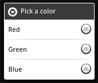

A dialog is usually a small window that appears in front of the current Activity.
The underlying Activity loses focus and the dialog accepts all user interaction.
Dialogs are normally used
for notifications and short activities that directly relate to the application in progress.
对话框一般是一个出现在当前活动之上的小窗口。 对话框之下的活动失去用户关注，对话框进行与用户的交互。对话框通常用于通知和
与正在运行的应用程序直接联系的简短
的活动。
The Android API supports the following types of Dialog objects:
Android API 支持下列几种Dialog对象:
AlertDialog——告警对话框ProgressDialog——进度对话框DatePickerDialog——日期输入对话框TimePickerDialog——时间输入对话框If you would like to customize your own dialog, you can extend the
base Dialog object or any of the subclasses listed above and define a new layout.
See the section on Creating a Custom Dialog below.
如果您想自己个性化您自己的对话框，您可以继承Dialog基类或者上述的几个子类来定义一种新的布局。参看下面Creating a Custom Dialog章节。
A dialog is always created and displayed as a part of an Activity.
You should normally create dialogs from within your Activity's
onCreateDialog(int) callback method.
When you use this callback, the Android system automatically manages the state of
each dialog and hooks them to the Activity, effectively making it the "owner" of each dialog.
As such, each dialog inherits certain properties from the Activity. For example, when a dialog
is open, the Menu key reveals the options menu defined for the Activity and the volume
keys modify the audio stream used by the Activity.
对话框总是作为Activity的一部分来创建和显示的。通常是您需要在您的活动的onCreateDialog(int)回调方法中创建对话框。当您使用这个回调时，Android系统会自动的管理每个对话框的状态并将对话框与活动挂钩，最终使活动成为对话框的“所有者”。这样一来，每个对话框会从活动继承某些属性。例如，当对话框打开时，MENU键显示的是为活动定义的菜单，按下音量调节键调节的是活动使用音频的声音。
Note: If you decide to create a dialog outside of the
onCreateDialog() method, it will not be attached to an Activity. You can, however,
attach it to an Activity with setOwnerActivity(Activity).
注意：如果您决定在onCreateDialog()方法之外创建一个对话框，这个对话框不会被附加到活动中。但是您可以使用setOwnerActivity(Activity)方法，将其附加到一个活动中。
When you want to show a dialog, call
showDialog(int) and pass it an integer that uniquely identifies the
dialog that you want to display.
当您想要显示一个对话框的时候，调用
showDialog(int)，并传给他
能唯一的识别您想要显示的对话框的 整数。
When a dialog is requested for the first time, Android calls
onCreateDialog(int) from your Activity, which is
where you should instantiate the Dialog. This callback method
is passed the same ID that you passed to showDialog(int).
After you create the Dialog, return the object at the end of the method.
当一个对话框第一次被请求时，Android会调用您的活动的onCreateDialog(int)方法，在这个方法中，您应该实例化您的Dialog。这个回调方法会收到与您传给showDialog(int)方法相同的ID。在您创建对话框之后，请在方法结尾处返回这个实例化的对象。
Before the dialog is displayed, Android also calls the optional callback method
onPrepareDialog(int, Dialog). Define this method if you want to change
any properties of the dialog each time it is opened. This method is called
every time a dialog is opened, whereas onCreateDialog(int) is only
called the very first time a dialog is opened. If you don't define
onPrepareDialog(), then the dialog will
remain the same as it was the previous time it was opened. This method is also passed the dialog's
ID, along with the Dialog object you created in onCreateDialog().
对话框被显示之前，Android会调用可选的onPrepareDialog(int, Dialog)回调方法。如果您想在每次对话框被打开时改变他的一些属性，您可以定义这个方法。这个方法在每次对话框打开时都会被调用，而onCreateDialog(int)方法只在对话框最初一次开启才被调用。如果您不定义onPrepareDialog()，那么对话框将与上次打开时相同。这个方法同您在onCreateDialog()中定义的Dialog对象一样，也收到对话框的ID。
The best way to define the onCreateDialog(int) and
onPrepareDialog(int, Dialog) callback methods is with a
switch statement that checks the id parameter that's passed into the method.
Each case should check for a unique dialog ID and then create and define the respective Dialog.
For example, imagine a game that uses two different dialogs: one to indicate that the game
has paused and another to indicate that the game is over. First, define an integer ID for
each dialog:
定义onCreateDialog(int)和onPrepareDialog(int, Dialog)回调方法的最好方法是使用一个switch
语句，检查收到的id参数。每一个
case
进行一个ID的对话框的创建和对应Dialog的定义。例如，设想有这样一个游戏，使用两个不同的对话框，一个表示游戏暂停，另一个表示游戏结束。首先，为每个对话框设定一个整数的对话框ID：
static final int DIALOG_PAUSED_ID = 0; static final int DIALOG_GAMEOVER_ID = 1;
Then, define the onCreateDialog(int) callback with a
switch case for each ID:
然后，使用switch语句定义onCreateDialog(int)方法，每一个ID一个
case ：
protected Dialog onCreateDialog(int id) {
Dialog dialog;
switch(id) {
case DIALOG_PAUSED_ID:
// do the work to define the pause Dialog
//完成暂停对话框的定义
break;
case DIALOG_GAMEOVER_ID:
// do the work to define the game over Dialog
//完成游戏结束对话框的定义
break;
default:
dialog = null;
}
return dialog;
}
Note: In this example, there's no code inside
the case statements because the procedure for defining your Dialog is outside the scope
of this section. See the section below about Creating an AlertDialog,
offers code suitable for this example.
注意：在这个例子中，因为如何定义对话框内容不在本节讨论范围，所以我们没在case中编写什么有意义的代码。参见下边的有关Creating an AlertDialog的章节，提供了适合这个例子的代码。
When it's time to show one of the dialogs, call showDialog(int)
with the ID of a dialog:
当您要显示对话框时，使用对话框的ID调用 showDialog(int)。
showDialog(DIALOG_PAUSED_ID);
When you're ready to close your dialog, you can dismiss it by calling
dismiss() on the Dialog object.
If necessary, you can also call dismissDialog(int) from the
Activity, which effectively calls dismiss() on the
Dialog for you.
当您准备关闭您的对话框时，您调用对话框对象的
dismiss()方法将其关闭。如果必要的话，您也可以调用活动的 dismissDialog(int)方法，他会有效的为您调用对话框的dismiss()方法。
If you are using onCreateDialog(int) to manage the state
of your dialogs (as discussed in the previous section), then every time your dialog is
dismissed, the state of the Dialog
object is retained by the Activity. If you decide that you will no longer need this object or
it's important that the state is cleared, then you should call
removeDialog(int). This will remove any internal references
to the object and if the dialog is showing, it will dismiss it.
如果您使用onCreateDialog(int)来管理您的对话框的状态（像上节讨论的那样），那么每次退出一个对话框的时候，活动会保留对话框的状态。如果您觉得不会再需要这个对话框对象了，或者必须清楚上次保留状态，您可以调用removeDialog(int)。如果对话框正在被显示，这个方法会删除所有内部的对对象的引用，然后对话框就会退出。
If you'd like your applcation to perform some procedures the moment that a dialog is dismissed,
then you should attach an on-dismiss listener to your Dialog.
如果您想要让您的应用程序在对话框退出时做出某些动作，则您应该将一个退出监听器附加到您的对话框中。
First define the DialogInterface.OnDismissListener interface.
This interface has just one method,
onDismiss(DialogInterface), which
will be called when the dialog is dismissed.
Then simply pass your OnDismissListener implementation to
setOnDismissListener().
首先定义DialogInterface.OnDismissListener接口。这个接口只有一个方法，onDismiss(DialogInterface)，这个方法会在对话框被关闭时被调用。然后您只需将OnDismissListener实现传递给setOnDismissListener()。
However, note that dialogs can also be "cancelled." This is a special case that indicates
the dialog was explicitly cancelled by the user. This will occur if the user presses the
"back" button to close the dialog, or if the dialog explicitly calls cancel()
(perhaps from a "Cancel" button in the dialog). When a dialog is cancelled,
the OnDismissListener will still be notified, but if you'd like to be informed that the dialog
was explicitly cancelled (and not dismissed normally), then you should register
an DialogInterface.OnCancelListener with
setOnCancelListener().
但是，请注意对话框也有可能被“取消”。这是一种特殊情况，表明用户明确地取消了对话框。如果用户在对话框出现后按下BACK按键，或者对话框显式地调用了cancel()（比如在对话框的“取消”按钮中进行这个方法地调用）。当一个对话框被取消了，
OnDismissListener还是会得知对话框关闭，但是如果您想要得知对话框是被有意地取消（而不是正常情况下地关闭），您就需要使用setOnCancelListener()注册一个DialogInterface.OnCancelListener。
An AlertDialog is an extension of the Dialog
class. It is capable of constructing most dialog user interfaces and is the suggested dialog type.
You should use it for dialogs that use any of the following features:
AlertDialog是Dialog
类地继承类。使用他可以构造大多数的对话框用户界面，并且是推荐的对话框类型。您可以在对话框中使用下边地功能：
To create an AlertDialog, use the AlertDialog.Builder subclass.
Get a Builder with AlertDialog.Builder(Context) and
then use the class's public methods to define all of the
AlertDialog properties. After you're done with the Builder, retrieve the
AlertDialog object with create().
您需要使用AlertDialog.Builder子类来创建一个AlertDialog。使用AlertDialog.Builder(Context)创建一个Builder
，然后使用Builder的公共方法定义所有的告警对话框的属性。Builder的属性设置好后，您要使用create()获取AlertDialog对象。
The following topics show how to define various properties of the AlertDialog using the
AlertDialog.Builder class. If you use any of the following sample code inside your
onCreateDialog() callback method,
you can return the resulting Dialog object to display the dialog.
下面的话题展示了如何使用AlertDialog.Builder类定义定义告警对话框的各种属性。如果您在您的onCreateDialog()回调方法中使用了下面示例代码，您需要返回Dialog对象来显示他。
To create an AlertDialog with side-by-side buttons like the one shown in the screenshot to the right,
use the set...Button() methods:
要创建一个像右边截图中显示的有 并排按钮的告警对话框，请使用set...Button()方法：
AlertDialog.Builder builder = new AlertDialog.Builder(this);
builder.setMessage("Are you sure you want to exit?")
.setCancelable(false)
.setPositiveButton("Yes", new DialogInterface.OnClickListener() {
public void onClick(DialogInterface dialog, int id) {
MyActivity.this.finish();
}
})
.setNegativeButton("No", new DialogInterface.OnClickListener() {
public void onClick(DialogInterface dialog, int id) {
dialog.cancel();
}
});
AlertDialog alert = builder.create();
First, add a message for the dialog with
setMessage(CharSequence). Then, begin
method-chaining and set the dialog
to be not cancelable (so the user cannot close the dialog with the back button)
with setCancelable(boolean). For each button,
use one of the set...Button() methods, such as
setPositiveButton(), that accepts the name for the button and a
DialogInterface.OnClickListener that defines the action to take
when the user selects the button.
首先，使用setMessage(CharSequence)向对话框添加文字信息。然后，进行
方法链接和使用 setCancelable(boolean)进行的不可取消（用户就不能使用BACK键取消对话框了）的
设置。对每一个按钮，使用一个 set...Button()方法，比如，setPositiveButton()就是接收按钮的名称还有DialogInterface.OnClickListener。DialogInterface.OnClickListener定义了用户点击按钮时的动作。
Note: You can only add one of each button type to the
AlertDialog. That is, you cannot have more than one "positive" button. This limits the number
of possible buttons to three: positive, neutral, and negative. These names are technically irrelevant to the
actual functionality of your buttons, but should help you keep track of which one does what.
注意：一种按钮类型您只能向一个告警对话框中添加一个。就是说，您不能添加多个“确认”按钮。有数量限制的按钮是：确认，中立，拒绝。这些名字和您的按钮的实际作用在技术上是无关的，但是能帮助您跟踪每一个做什么。
To create an AlertDialog with a list of selectable items like the one shown to the right,
use the setItems() method:
创建一个像右边显示的带有可选择项目的列表的对话框，您可以使用setItems()方法。
final CharSequence[] items = {"Red", "Green", "Blue"};
AlertDialog.Builder builder = new AlertDialog.Builder(this);
builder.setTitle("Pick a color");
builder.setItems(items, new DialogInterface.OnClickListener() {
public void onClick(DialogInterface dialog, int item) {
Toast.makeText(getApplicationContext(), items[item], Toast.LENGTH_SHORT).show();
}
});
AlertDialog alert = builder.create();
First, add a title to the dialog with
setTitle(CharSequence).
Then, add a list of selectable items with
setItems(), which accepts the array of items to display and a
DialogInterface.OnClickListener that defines the action to take
when the user selects an item.
首先，使用setTitle(CharSequence)为对话框添加标题。然后，使用setItems()向对话框中添加可选项目的列表，setItems()接收要显示的列表的数组和
定义了用户选择项目之后的动作的DialogInterface.OnClickListener。
To create a list of multiple-choice items (checkboxes) or
single-choice items (radio buttons) inside the dialog, use the
setMultiChoiceItems() and
setSingleChoiceItems() methods, respectively.
If you create one of these selectable lists in the
onCreateDialog() callback method,
Android manages the state of the list for you. As long as the Activity is active,
the dialog remembers the items that were previously selected, but when the user exits the
Activity, the selection is lost.
在对话框中创建一个多项选择（checkboxes）的列表或者单选按钮（radio buttons），您可以分别使用setMultiChoiceItems()
或
setSingleChoiceItems()方法。如果您在onCreateDialog()回调方法中创建这些可选列表，Android会为您管理列表的状态。在活动激活的状态下，对话框会记住您上次选择的选项，但是用户推出活动后，记录的选择项就丢失了。
Note: To save the selection when the user leaves or
pauses the Activity, you must properly save and restore the setting throughout
the Activity Lifecycle.
To permanently save the selections, even when the Activity process is completely shutdown,
you need to save the settings
with one of the Data
Storage techniques.
注意：记录用户离开或暂停活动时的选择项，您需要通过Activity Lifecycle方法进行正确的存储和还原。如要
在即便活动的进程完全关闭的情况下也能 永久的存储选项，您需要使用Data
Storage技术保存选择项。
To create an AlertDialog with a list of single-choice items like the one shown to the right,
use the same code from the previous example, but replace the setItems() method with
setSingleChoiceItems():
创建一个像右边所示带有单选按钮列表的告警对话框，可以使用上一个示例代码，但是，您需要将setItems()方法替换为setSingleChoiceItems()：
final CharSequence[] items = {"Red", "Green", "Blue"};
AlertDialog.Builder builder = new AlertDialog.Builder(this);
builder.setTitle("Pick a color");
builder.setSingleChoiceItems(items, -1, new DialogInterface.OnClickListener() {
public void onClick(DialogInterface dialog, int item) {
Toast.makeText(getApplicationContext(), items[item], Toast.LENGTH_SHORT).show();
}
});
AlertDialog alert = builder.create();
The second parameter in the
setSingleChoiceItems() method is an integer value for the checkedItem, which indicates the
zero-based list position of the default selected item. Use "-1" to indicate that no item should be
selected by default.
setSingleChoiceItems()方法中的第二个参数是checkedItem的整数值，从零开始计数。使用“
A ProgressDialog is an extension of the AlertDialog
class that can display a progress animation in the form of a spinning wheel, for a task with
progress that's undefined, or a progress bar, for a task that has a defined progression.
The dialog can also provide buttons, such as one to cancel a download.
ProgressDialog是AlertDialog类的继承类，没有定义进度的任务以转轮、定义任务进度的以进度条
的形式显示有关进度的动画，进度条对话框也可以提供按钮，比如取消下载的按钮。
Opening a progress dialog can be as simple as calling
ProgressDialog.show(). For example, the progress dialog shown to the right can be
easily achieved without managing the dialog through the
onCreateDialog(int) callback,
as shown here:
通过调用ProgressDialog.show()就可以很简单地打开一个进度对话框。例如，右边显示的进度对话框实现起来很简单，不用调用onCreateDialog(int)来对对话框进行管理，示例代码：
ProgressDialog dialog = ProgressDialog.show(MyActivity.this, "",
"Loading. Please wait...", true);
The first parameter is the application Context,
the second is a title for the dialog (left empty), the third is the message,
and the last parameter is whether the progress
is indeterminate (this is only relevant when creating a progress bar, which is
discussed in the next section).
第一个参数是应用程序的Context，第二个参数是对话框的标题（示例中留空），第三个是现实的文字信息，最后一个是任务是否有明确进度（只在创建进度条是有用，有关内用在下节讨论）。
The default style of a progress dialog is the spinning wheel.
If you want to create a progress bar that shows the loading progress with granularity,
some more code is required, as discussed in the next section.
默认的进度对话框的样式是转轮式。如果您想要创建用一个个间隔的方块显示的进度条，您需要编写更多的代码，参见下边章节。
To show the progression with an animated progress bar:
用带动画的进度条显示进度：用带动画的进度条显示进度：
ProgressDialog(Context).ProgressDialog(Context)，进行进度对话框的初始化。setProgressStyle(int) and
set any other properties, such as the message.setProgressStyle(int)设置进度显示样式为"STYLE_HORIZONTAL"
，然后设置其他属性，例如文字信息。show() or return the ProgressDialog from the
onCreateDialog(int) callback.show()，或者从onCreateDialog(int)中返回ProgressDialog。setProgress(int) with a value for
the total percentage completed so far or incrementProgressBy(int)
with an incremental value to add to the total percentage completed so far.setProgress(int)，或者将增加的进度百分数传入incrementProgressBy(int)。For example, your setup might look like this:
例如，您可以这样设置您的进度对话框：
ProgressDialog progressDialog;
progressDialog = new ProgressDialog(mContext);
progressDialog.setProgressStyle(ProgressDialog.STYLE_HORIZONTAL);
progressDialog.setMessage("Loading...");
progressDialog.setCancelable(false);
The setup is simple. Most of the code needed to create a progress dialog is actually
involved in the process that updates it. You might find that it's
necessary to create a second thread in your application for this work and then report the progress
back to the Activity's UI thread with a Handler object.
If you're not familiar with using additional
threads with a Handler, see the example Activity below that uses a second thread to
increment a progress dialog managed by the Activity.
上面的设置是很简单的。实际上创建进度对话框的代码集中在更新进度状态上。您会发现您需要在您的应用程序中新建一个线程监视进度然后通过一个Handler对象将进度报告给活动UI线程。如果您不熟悉如何使用带有Handler的额外线程，参考下面由活动管理的使用第二线程增加进度的例子。
 Example ProgressDialog with a second thread
Example ProgressDialog with a second thread
This example uses a second thread to track the progress of a process (which actually just
counts up to 100). The thread sends a Message back to the main
Activity through a Handler each time progress is made. The main Activity then updates the
ProgressDialog.
package com.example.progressdialog;
import android.app.Activity;
import android.app.Dialog;
import android.app.ProgressDialog;
import android.os.Bundle;
import android.os.Handler;
import android.os.Message;
import android.view.View;
import android.view.View.OnClickListener;
import android.widget.Button;
public class NotificationTest extends Activity {
static final int PROGRESS_DIALOG = 0;
Button button;
ProgressThread progressThread;
ProgressDialog progressDialog;
/** Called when the activity is first created. */
public void onCreate(Bundle savedInstanceState) {
super.onCreate(savedInstanceState);
setContentView(R.layout.main);
// Setup the button that starts the progress dialog
button = (Button) findViewById(R.id.progressDialog);
button.setOnClickListener(new OnClickListener(){
public void onClick(View v) {
showDialog(PROGRESS_DIALOG);
}
});
}
protected Dialog onCreateDialog(int id) {
switch(id) {
case PROGRESS_DIALOG:
progressDialog = new ProgressDialog(NotificationTest.this);
progressDialog.setProgressStyle(ProgressDialog.STYLE_HORIZONTAL);
progressDialog.setMessage("Loading...");
progressThread = new ProgressThread(handler);
progressThread.start();
return progressDialog;
default:
return null;
}
}
// Define the Handler that receives messages from the thread and update the progress
final Handler handler = new Handler() {
public void handleMessage(Message msg) {
int total = msg.getData().getInt("total");
progressDialog.setProgress(total);
if (total >= 100){
dismissDialog(PROGRESS_DIALOG);
progressThread.setState(ProgressThread.STATE_DONE);
}
}
};
/** Nested class that performs progress calculations (counting) */
private class ProgressThread extends Thread {
Handler mHandler;
final static int STATE_DONE = 0;
final static int STATE_RUNNING = 1;
int mState;
int total;
ProgressThread(Handler h) {
mHandler = h;
}
public void run() {
mState = STATE_RUNNING;
total = 0;
while (mState == STATE_RUNNING) {
try {
Thread.sleep(100);
} catch (InterruptedException e) {
Log.e("ERROR", "Thread Interrupted");
}
Message msg = mHandler.obtainMessage();
Bundle b = new Bundle();
b.putInt("total", total);
msg.setData(b);
mHandler.sendMessage(msg);
total++;
}
}
/* sets the current state for the thread,
* used to stop the thread */
public void setState(int state) {
mState = state;
}
}
}
If you want a customized design for a dialog, you can create your own layout
for the dialog window with layout and widget elements.
After you've defined your layout, pass the root View object or
layout resource ID to setContentView(View).
如果您想要为活动创建一个个性化的对话框，您可以创建自己的带有 布局和控件元素
的对话框窗口布局。您在定义好布局之后，需要将根View对象或布局资源ID传递给setContentView(View)。
For example, to create the dialog shown to the right:
例如，创建一个右图所示的对话框：
custom_dialog.xml:
custom_dialog.xml：
<LinearLayout xmlns:android="http://schemas.android.com/apk/res/android"
android:id="@+id/layout_root"
android:orientation="horizontal"
android:layout_width="fill_parent"
android:layout_height="fill_parent"
android:padding="10dp"
>
<ImageView android:id="@+id/image"
android:layout_width="wrap_content"
android:layout_height="fill_parent"
android:layout_marginRight="10dp"
/>
<TextView android:id="@+id/text"
android:layout_width="wrap_content"
android:layout_height="fill_parent"
android:textColor="#FFF"
/>
</LinearLayout>
This XML defines an ImageView and a TextView
inside a LinearLayout.
这个 XML 文件在LinearLayout中定义了ImageView和TextView。
Context mContext = getApplicationContext();
Dialog dialog = new Dialog(mContext);
dialog.setContentView(R.layout.custom_dialog);
dialog.setTitle("Custom Dialog");
TextView text = (TextView) dialog.findViewById(R.id.text);
text.setText("Hello, this is a custom dialog!");
ImageView image = (ImageView) dialog.findViewById(R.id.image);
image.setImageResource(R.drawable.android);
After you instantiate the Dialog, set your custom layout as the dialog's content view with
setContentView(int), passing it the layout resource ID.
Now that the Dialog has a defined layout, you can capture View objects from the layout with
findViewById(int) and modify their content.
在您实例化Dialog之后，使用setContentView(int)将您的个性化布局设置为对话框的显示内容，将布局文件资源ID传给他。现在这个对话框就得到了一个定义好的布局，您可以使用findViewById(int)从布局中获得View对象，然后修改其内容。
A dialog made with the base Dialog class must have a title. If you don't call
setTitle(), then the space used for the title
remains empty, but still visible. If you don't want
a title at all, then you should create your custom dialog using the
AlertDialog class. However, because an AlertDialog is created easiest with
the AlertDialog.Builder class, you do not have access to the
setContentView(int) method used above. Instead, you must use
setView(View). This method accepts a View object,
so you need to inflate the layout's root View object from
XML.
使用＊基类建造的对话框必须有一个标题。如果您不调用setTitle()，那么留做标题的区域就是空的，但是还是可见的。如果您确实不想设定一个标题，那么您就应该用AlertDialog类创建您的个性化的对话框。但是，由于告警对话框很简单，使用AlertDialog.Builder类进行建造，您就不能向上边例子中那样使用setContentView(int)方法了。作为替代，您只好使用setView(View)。这个方法接收一个 View
对象，所以您需要扩充XML文件中的根View。
To inflate the XML layout, retrieve the LayoutInflater with
getLayoutInflater()
(or getSystemService()),
and then call
inflate(int, ViewGroup), where the first parameter
is the layout resource ID and the second is the ID of the root View. At this point, you can use
the inflated layout to find View objects in the layout and define the content for the
ImageView and TextView elements. Then instantiate the AlertDialog.Builder and set the
inflated layout for the dialog with setView(View).
扩充XML布局文件，您可以使用
getLayoutInflater()（或getSystemService()）获取一个 LayoutInflater
，然后调用inflate(int, ViewGroup)，第一个参数是布局文件的资源的ID，第二个是根View的ID。这时，您就可以使用扩充后的布局文件寻找布局中的View对象，定义ImageView
和TextView元素的内容。然后实例化一个＊，使用＊根据增加支后的布局文件设置对话框。
Here's an example, creating a custom layout in an AlertDialog:
下面是在 AlertDialog内进行个性化布局的例子：
AlertDialog.Builder builder;
AlertDialog alertDialog;
Context mContext = getApplicationContext();
LayoutInflater inflater = (LayoutInflater) mContext.getSystemService(LAYOUT_INFLATER_SERVICE);
View layout = inflater.inflate(R.layout.custom_dialog,
(ViewGroup) findViewById(R.id.layout_root));
TextView text = (TextView) layout.findViewById(R.id.text);
text.setText("Hello, this is a custom dialog!");
ImageView image = (ImageView) layout.findViewById(R.id.image);
image.setImageResource(R.drawable.android);
builder = new AlertDialog.Builder(mContext);
builder.setView(layout);
alertDialog = builder.create();
Using an AlertDialog for your custom layout lets you
take advantage of built-in AlertDialog features like managed buttons,
selectable lists, a title, an icon and so on.
使用个性化的告警对话框可以在个性化的基础上，更好地利用自带的告警对话框功能，比如按钮，可选择列表，标题，图标等等。
For more information, refer to the reference documentation for the
Dialog and AlertDialog.Builder
classes.
更多信息，参看Dialog和 AlertDialog.Builder类的参考文档。
← Back to User Interface
回到用户界面